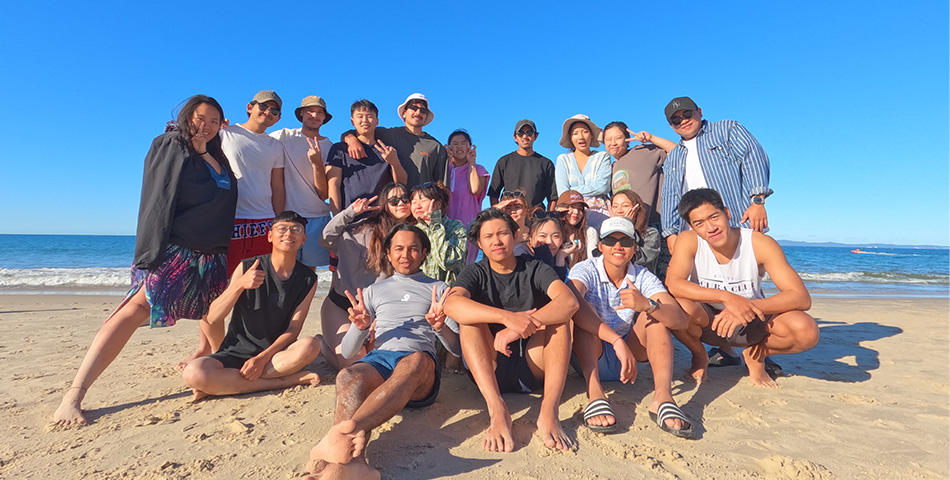

一個不太像旅遊景點，卻很適合生活一段時間的澳洲小鎮
Caboolture 並不是一個充滿觀光景點的城市。它更像是一個很普通、很生活化的澳洲小鎮。沒有 Brisbane 那麼繁華，也沒有 Gold Coast 那麼觀光化。街道、商場、住宅區與超市，組成了這裡最日常的風景。
但也正因為如此，生活在 Caboolture 的日子反而會慢下來。白天工作，下班去超市買菜，週末開車去附近的海邊、市集或 Brisbane 走走。沒有每天都在旅行，卻可以慢慢感受到一種比較接近當地人生活的澳洲日常。
而且 Caboolture 的位置其實相當方便。往南可以到 Brisbane、Redcliffe，往北則可以前往 Sunshine Coast、Mooloolaba、Noosa；如果願意開遠一點，甚至可以一路玩到 Gold Coast 或 Byron Bay。
01
Caboolture 本身雖然不大，但附近其實有很多亞洲餐廳，以下是依照我個人喜好推薦幾間餐廳。
非常好吃的泰式餐廳。份量很足，對 Working Holiday 的人來說算是很實在的一餐。
韓式 BBQ 餐廳。如果想吃烤肉，這間可以列入選擇。
韓式料理餐廳。炸雞不錯吃，很適合幾個朋友一起吃，偶爾會有折扣活動。
如果吃完正餐還想找甜點，可以來這裡。
想簡單吃一點壽司或日式料理時，可以考慮。
如果喜歡日式炸豬排、丼飯等料理，North Lakes 離 Caboolture 也很近。
位於北湖的好吃韓式炸雞類餐廳。
如果喜歡泰式料理，North Lakes 的 Kinn Thai 也可以加入清單。
位於 Mango Hill 的日式吃到飽燒肉。有三種價位可以選，我覺得滿好吃的。
02
最靠近 Caboolture 的市集。市集不大，賣一些蔬菜水果、二手用品以及餐車。
可以把市集和 Bribie Island 的海邊一起安排。
Redcliffe 是 Brisbane 北邊很適合週末散步的地方。逛完市集後，可以順便去海邊走走。
位置有點遠的市集，但規模和氛圍都比一般的市集更大更有特色。
可以和 Sunshine Coast 的海邊行程一起安排。週日早上逛市集，再到海邊走走，是很舒服的一日行程。
03
距離 Caboolture 相對近，很適合週末去。如果只是想找個地方吹吹海風，不需要安排太複雜的行程。
往南走的選擇。可以把 Redcliffe Markets 和海灘安排在同一天。
如果想要更有「度假感」的海邊，可以往 Sunshine Coast 前進。
Mooloolaba 是 Sunshine Coast 很受歡迎的海濱區域。除了海灘之外，也有很多餐廳、咖啡廳和商店。
如果有完整一天的時間，很推薦一路往北到 Noosa。Noosa 的海灘、國家公園和小鎮氛圍，都和 Caboolture 有很大的不同。
往南則可以一路前往 Gold Coast。如果想要感受比較熱鬧、觀光化的澳洲海灘城市，Gold Coast 和 Caboolture 是完全不同的兩種生活。
如果不一定要看海，也可以往內陸走。Lake Moogerah 是另一種完全不同的自然景色，很適合想暫時離開城市的人。
如果時間足夠，甚至可以一路往南到 Byron Bay。距離比較遠，不適合當成普通的下午行程，但很適合安排成週末 Road Trip。
04
Caboolture 最大的優勢之一，就是距離 Brisbane 不算太遠。平常可以去吃飯、逛街，而到了大型活動期間，也可以特別安排一趟 Brisbane。（以下只列舉我個人參加過的活動）
澳洲非常具有地方特色的農業嘉年華。如果剛好在 Brisbane 生活期間遇到 Ekka，可以去感受一下澳洲大型地方活動的氛圍。
Brisbane Festival 是 Brisbane 很重要的年度活動之一。其中 Riverfire 的煙火非常有代表性。如果喜歡大型活動和煙火，這是很值得安排的一晚。
每年春天 Brisbane 會出現大量紫色的 Jacaranda（藍花楹）。整座城市會出現很多漂亮的紫色街景。如果剛好在 9–10 月左右待在 Brisbane，很推薦特別找時間去看看。
Brisbane 不定期會有 Taiwanese Market 或台灣相關活動。在澳洲生活久了，偶爾看到台灣食物和文化，會有一種很奇妙的親切感。
05
我其實也沒有很常去 Brisbane，所以只推薦一些我跟朋友吃過、覺得不錯的餐廳給大家。
很好吃的台灣餐廳，圓桌類型，很適合帶外國朋友體驗台灣菜的好地方。
另一間台灣餐廳，如果想吃中式料理或餃子類，可以考慮。
我最喜歡的麻辣燙，可惜附近只有 Brisbane 有。
非常好吃的亞洲料理，不過出餐速度非常慢。
Brisbane 華人區 Sunnybank 裡很大的亞洲超市，可以買到很多亞洲商品。
完全台灣口味的早餐店，懷念台灣早餐店的人可以去吃。
如果你是來澳洲旅行，Caboolture 可能不會是你第一個想到的目的地。但如果你是 Working Holiday，想在澳洲某個地方生活幾個月，我反而覺得 Caboolture 是一個滿有意思的選擇。
這裡沒有每天都需要打卡的景點。沒有繁華的市中心，也沒有每天都有活動的夜生活。但你可以在這裡工作、買菜、煮飯、吃飯，然後在週末開著車去海邊、逛市集，偶爾進 Brisbane 看一場活動。
生活不一定要一直旅行。有時候真正的旅行，是在一個地方住下來之後，慢慢知道哪裡適合吃飯、哪裡適合看海、哪裡適合週末散步，也慢慢認識一個原本完全陌生的城市。
而 Caboolture 對我來說，就是這樣的一個地方。它很普通。但也正因為普通，才成為了我澳洲生活裡，很真實的一部分。